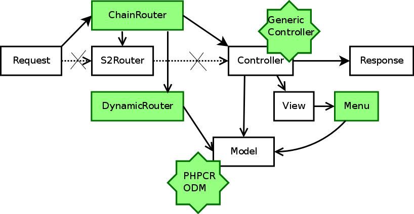
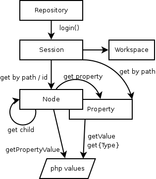
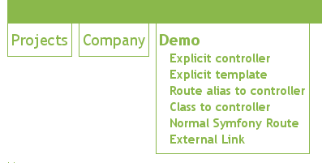
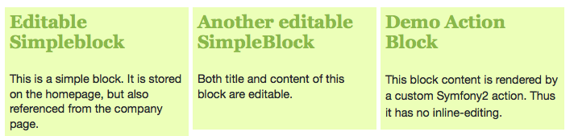
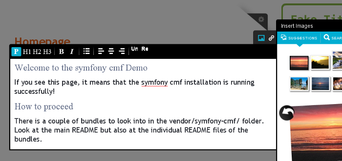
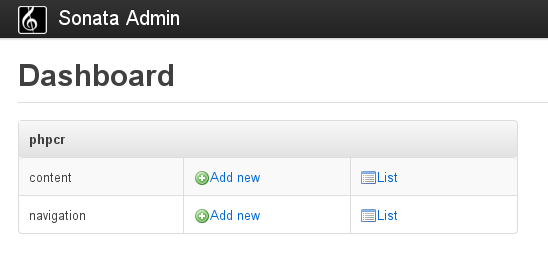

Symfony2 CMF Project
The Big Picture
An overview of the Symfony2 content management framework with lots of pictures.
The Symfony CMF project makes it easier for developers to add CMS functionality to
applications built with the Symfony2 PHP framework. Key development principles for the provided
set of bundles are scalability, usability,
documentation and testing
Content management framework,
not content management system
- Use what you can
- Replace what you need
- Ignore what you do not need
- Collection of modular tools to do content management
- Not a ready-to-use application for end users
Symfony2 Control Flow

Symfony2 Control Flow
CMF additions

PHPCR and the ODM

- PHP Content Repositories API specification
- Graph-based, schema-less, versioning document database
- Doctrine PHPCR ODM: map nodes to your objects
- Add features like multilanguage
Routing
- ChainRouter allows to have several routers in action
- DoctrineRouter for user-defined routes in doctrine store
- Specifies controller and page content to use
- Or just the template instead of controller (with the ContentBundle)
Content Bundle
- Provides generic controller so you need only a custom template
- Simple StaticContent model and template
Menu Bundle
- Integrate KnpMenuBundle with Doctrine
- Menu documents reference content documents
- Generates URL for content

Block: Sonata PHPCR ODM BlockBundle
- Based on the SonataBlockBundle
- Multiple blocks per page
- Blocks can be reused on different page

Frontend Editing: Create.js
- backbone.js based editing framework
- Uses RDF annotations to detect editable data
- Comes with hallo.js for contentEditable
- Symfony2 integration for saving data via REST

Backend: Sonata PHPCR ODM AdminBundle
- Based on the SonataAdminBundle
- Supports tree oriented data

Other CMF Bundles
- SymfonyCmfSearchBundle (content search, extends LiipSearchBundle)
- SymfonyCmfSimpleCms (a simple CMS incl. content authoring)
- Planning integration with several more Sonata Bundles